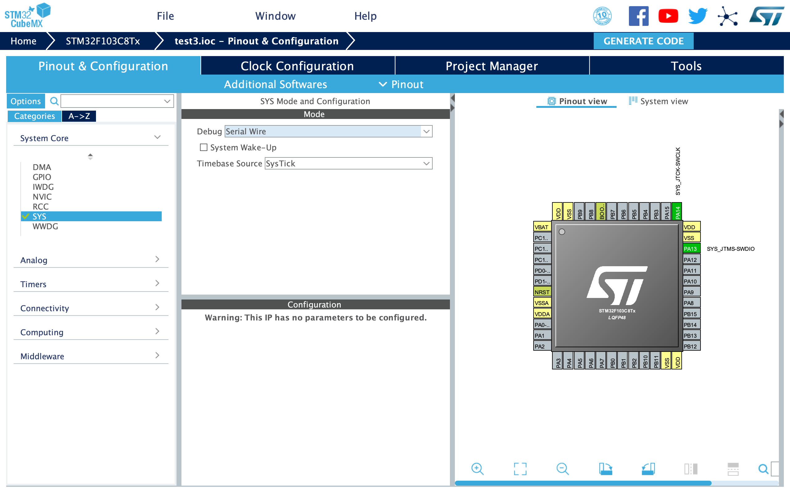
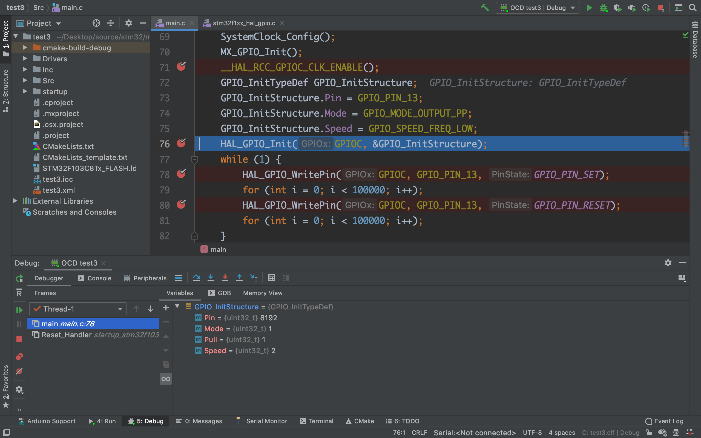

如何优雅地开发STM32(Clion,CubeMX,ST-Link)
引
与时髦的应用层码农不同，我们这些嵌入式码农在写单片机程序的时候大多使用上古的Keil，不得不说，Keil确实好用，编译、调试都可以一键完成，但只提供Windows版本，而且界面还停留在上个世纪，也没有自动补全等现代IDE的功能。
自从前段时间换了MacBook Pro之后我就基本上用它来干活了，虚拟机跑Keil实在是得不偿失，更换嵌入式开发环境在所难免。
工具链
好在ST官方提供的CubeMX支持全平台，免去了SDK的麻烦。
工具链方面GCC本来就是自由软件，macOS上可以直接用Homebrew安装交叉编译器，另外虽然macOS在安装了xcode命令行工具后虽然有gcc命令，但那个实际上是clang，无法用于单片机调试，所以我们还要额外用Homebrew安装GCC，我这里安装的版本是GCC9（截止本文，Homebrew已经可以安装GCC10），调用的命令就是gcc-9，同时获得用于调试的gdb。
同时我们还要安装交叉编译器arm-none-eabi-gcc，ARM的官网提供了一份macOS的预编译二进制包，直接下载就可以使用。但是，能用包管理的东西，那必然要用包管理呀，PX4飞控的开发者们维护了一份Homebrew的arm-none-eabi-gcc工具链，包含常用版本，可以看看这个仓库。
ST官方的下载程序STM32CubeProgrammer也是全平台，更棒的是还提供了命令行版本。不过就我个人使用的情况，安装的时候有点问题，官方提供的app文件一点开就闪退，最后我是直接从命令行调用里面的jar包才安装上的。安装好之后就获得了STM32CubeProgrammer，以及它的命令行版本STM32_Programmer_CLI。实际上还有一个开源的下载程序stm32flash，不过它只能用来串口下载，我没有测试，不知道效果如何。另外还可以用OpenOCD来下载程序，这个后面会提到。
以上，工具链的部分就解决了，也就是说原则上我们可以用三大操作系统进行STM32开发，现在我们需要一个优质的IDE，受稚晖大佬的文章启发，我决定按照他的方法配置Clion，本文并不会包含与那篇文章有关的内容，因为我这里配置的时候一路顺风，除了下载和调试。
硬件准备
单片机是万金油C8T6，下载和调试使用山寨版ST-Link，淘宝10块钱，macOS免驱，插上就直接识别出来了。
如果觉得自己代码功底很好，完全不需要调试的话也可以使用串口下载，成本更低，整个CH340G就完事了，相关教程不再列出。
坑
CubeMX
可以发现要么只能成功下载一次，要么直接就下载不了，OpenOCD提示not connect to target，我搜到了这篇帖子，按照上面的说法，这是因为PA13和PA14被错误配置，要解决也很简单，在CubeMX中修改SYS设置，SYS-Debug设置为Serial Wire即可。

OpenOCD
按照稚晖大佬的教程配置完毕后，我们得到了一个空的STM32源码项目，里面包含HAL以及一些初始化代码，编译也是没有问题的，OpenOCD的配置文件得修改一下。我们用Homebrew安装好OpenOCD之后会得到一些主流开发板、下载器、芯片的cfg文件，他们应该位于/usr/local/share/openocd/scripts，这里对于STM32F103C8T6 + ST-Link的组合，需要两个文件，一个是target/stm32f1x.cfg，还有一个是interface/stlink-v2.cfg（也有一个v1，取决于你用的哪个版本的ST-Link）。我们也可以编写一份cfg，比如board/stm32f103c8t6.cfg，内容如下
1 | source [find interface/stlink-v2.cfg] |
非常简单，这样就可以愉快地进行下载和调试了。
